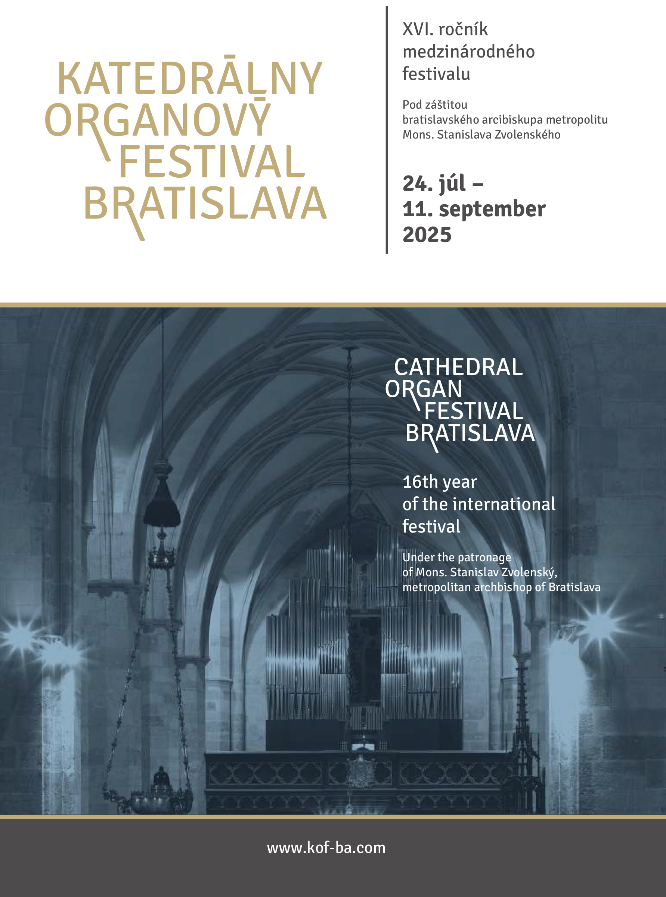

Information
The Bratislava Cathedral Organ Festival began its history in 2010, when a new organ by Gerald Woehl was built in St Martin’s Cathedral. The founder of the festival, as well as the initiator and manager of the construction of the cathedral organ, is the organist Stanslav Šurin. Since its beginning, this festival has been held under the auspices of His Excellency Msgr. Stanislav Zvolenský, metropolitan archbishop.
„Our meetings with organ music are an opportunity for us to perceive in community our human dignity before God also through authors, performers, musical instrument and receptive listeners of precious works of art. Thank you for accepting the invitation to our Cathedral Organ Festival and enriching us with your presence.”
Msgr. Stanislav Zvolenský
Programme
Under the auspices of His Excellency Msgr. Stanislav Zvolenský, metropolitan archbishop.
Supported using public funding by Slovak Arts Council
A DIALOGUE OF STRINGS AND WIND
MARIA PERUCKA | violin PL |; ROMAN PERUCKI | organ PL |
July 24 - 7:30 PM
St. Martin's Cathedral, Bratislava
M. J. S. Bach, J. Paderewski, M. Surzyński, F. Borowski, J. Langlais, E. Schneider
CHURCH AND CONCERT ORGAN MUSIC
ROBERTO PADOIN | IT |
July 31 - 7:30 PM
St. Martin's Cathedral, Bratislava
A. Tinazzoli, J. S. Bach, W. A. Mozart, G. Morandi, F. Mendelssohn-Bartholdy, C. Franck, A. Guilmant, M. E. Bossi
POETRY AND VIRTUOSITY
GAIL ARCHER | USA |
August 7 - 7:30 PM
St. Martin's Cathedral, Bratislava
J. S. Bach, F. Mendelssohn-Hensel, F. Liszt, R. Schumann, J. Brahms
WACHET AUF, RUFT UNS DIE STIMME
ANDREAS JOST | CH |
August 14 - 7:30 PM
St. Martin's Cathedral, Bratislava
D. Buxtehude, J. S. Bach, M. Reger, P. Kee
ORGAN FIREWORKS AT THE WOEHL
WINFRIED LICHTSCHEIDEL | DE |
August 21 - 7:30 PM
St. Martin's Cathedral, Bratislava
A. Vivaldi, J. S. Bach, R. Schumann, R. Wagner, M. Duruflé
FROM BACH TO THE BELLE ÉPOQUE
JEAN-CHRISTOPH GEISER | CH |
August 28 - 7:30 PM
St. Martin's Cathedral, Bratislava
J. S. Bach, G. F. Händel, G. B. Pergolesi, W. A. Mozart, M. Skoryk, S. Šurin, J. Ropek
ROMANTIC VOICES AND PIPES
NORBERT BRANDAUER | conductor A |; COR-OS-ANIMA Choir;
MIXED CHOIR TIRNAVIA; MICHAL STAHL | choirmaster SK |;
LUCIA BYRÁKOVÁ | soprano SK |; KLAUS KUCHLING | organ A |
September 4 - 7:30 PM
St. Martin's Cathedral, Bratislava
W. A. Mozart, A. P. F. Boëly, F. Mendelssohn-Bartholdy, Ch. Gounod, A. Bruckner, J. Brahms, J. G. Rheinberger, E. Grieg, S. Rachmaninoff
THE SOUND OF MAJESTY
SOLAMENTE NATURALI; MILOŠ VALENT | artistic leader SK |;
HILDA GULYÁS | soprano SK |; STANISLAV ŠURIN | organ SK |
September 11 - 7:30 PM
St. Martin's Cathedral, Bratislava
G. F. Händel
CONCERT IN THE ARCHDIOCESE
ALEŠ NOSEK | organ CZ |
August 31 - 3:00 PM
Church of St. Margaret, Bratislava - Lamač
J. L. Krebs, J. H. Rinck, A. Guilmant, T. Dubois, J. Klička, V. Novák, L. Vierne, J. Bonnet
Poster 2025

Bulletin 2025
Hotel Devín
Our concert artists are staying at Hotel Devín
Come and enhance your musical experience with the gastronomic one. Your ticket to the Cathedral Organ Festival is also a coupon for a 10 percent discount on consumption at Café Devín on the day of entry.

Organ
„Gerald Woehl's organ for the Bratislava Cathedral is so far the last landmark of Slovak organ culture.Gerald Woehl's organ for the Bratislava Cathedral is so far the last landmark of Slovak organ culture. It is not only because it is the largest organ built in Slovakia after 1989. It is also the first non-factory organ of its size in our history and the first organ comparable to the most important European cathedral organs.”
Stanislav Šurin- initiator and manager of the construction of the cathedral organ, director of the festival
„The new organ connects the nave of the church with a window in the nave through an opening in the middle, through which light penetrates, as if from eternity. This creates a harmonious unity of space and musical instrument. Organ of St Elizabeth musically continues the organ tradition in St Martin’s Cathedral. Starting from the classic Vierengel organ of the high baroque, continuing with a romantic instrument from the end of the 19th century to today's organ, on which it is possible to perform not only the music of the 20th century, but also the music of the 3rd millennium, i.e. the music of the present and the future. This instrument personifies "the European organ".”
Gerald Woehl - builder of the cathedral organ
„We can only enjoy the construction of the new organ. And since that instrument stands in such a prestigious place as the Bratislava Cathedral, it is important to realize the magnitude of this initiative. The organ will serve to accompany religious events of the parish, diocese, country, as well as cultural events. Its presence is decisive for the future. It is a pleasure to watch this project come to fruition. I am convinced that this organ will become one of the main points of musical events in Slovakia.”
Olivier Latry – titular organist of Notre-Dame Cathedral in Paris
Organ in St Martin’s cathedral was built in 2010 by Gerald Woehl's company from Marburg. It thus replaced the original Vincent Možný organ from 1880, which had 2 manuals with 34 stops, mechanical action and slider windchests. The new organ has 4 manuals, 74 stops, mechanical playing and electric register action. It uses a symphonic air system (different wind pressures for the bass and treble parts of the manuals), which can be switched to a classic air system (when the concussion bellows are turned off).
The location of the new instrument is under the arch of the lintel overlooking the west mosaic window. Prospect pipe fields are partly decorated with roses. There is a reason for this decoration - the roses remind of the miracle of St Elizabeth, who lived in Bratislava approximately 800 years ago. In 1228, she went to Thuringia, where she cared for the sick and abandoned in Marburg, Germany. It is an exceptional coincidence that the new organ comes from Marburg. For this reason, it also bears the name of this saint - The Organ of St. Elizabeth.
{kind=link}
BASIC TECHNICAL DATA OF THE ORGAN
- 4 manuals with a range of C – a3 (58 keys);
- pedal with a range of C – f1 (30 keys);
- slider windchests;
- mechanical playing action (suspended);
- mechanical couplers for the I., II. and III. manual and pedal;
- electric couplers for the IV. manual;
- III. manual in swell box;
- Setzer combinations 9 x 999;
- symphonic air system (air pressures are indicated in mm of water column);
| bass | trebless | |
|---|---|---|
| I. HW: | 77 | 85 |
| II. OW: | 77 | 85 |
| III. SW: | 95 | 105 |
| Pedal: | 85 | - |
- concussion bellows with an option of switching off;
- organ pump with a power of 43 cubic meters/min.
- the smallest pipe: 5mm (without foot);
- the largest pipe: 8,23m
- materials used: wood (spruce, pine, ash, oak, maple), metal (organ metal - tin and lead alloy, copper, zinc, silver, brass);
- material of keyboards: whole tones (natural bone), half-tones (ebony wood);
- number of pipes: 4 316 (4053 – metal, 263 – wood, 712 – reed pipes);
- organ weight: 9 tones
Gallery & Archive
Gallery and archive can be found after clicking on buttons below.
ORGANIZERS AND SPONSORS OF THE FESTIVAL